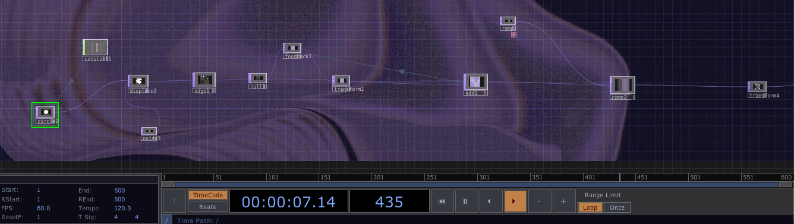
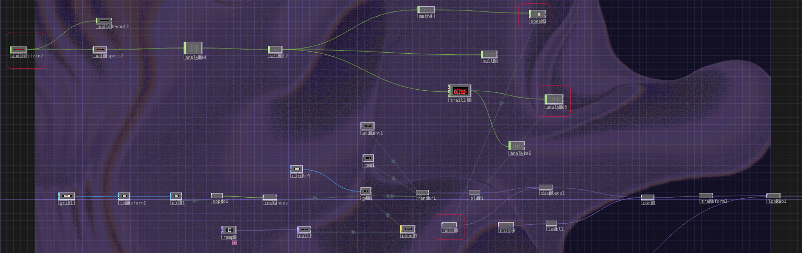

Project: Situated Loops
For this project, I did several trials:
1. Using 'Feedback loop' to generate fractal patterns.
2. Trying the GLSL.
3. Creating 2D terrain, using 'Geometry Instance'.
4. Adding feedback loop and audio to iterate texture and motion of the terrain.
Fractal pattern
Video:
VIDEO
File:
https://github.com/yuliniris/creative-tech-4/tree/main/projectLoops .
File name: fractal.toe
GlSL trial
Video:
VIDEO
File:
https://github.com/yuliniris/creative-tech-4/tree/main/projectLoops .
File name: GLSL.toe
2D terrain
Video:
VIDEO
File:
https://github.com/yuliniris/creative-tech-4/tree/main/projectLoops .
File name: terrain.toe
Iterations of feedback loop and audio
Video:
VIDEO
File:
https://github.com/yuliniris/creative-tech-4/tree/main/projectLoops .
File name:loopAudio.toe
Feedback loop module

Extracting frequencies data from audio

Responses to brief:
What are the input signals in your installation? How do they transform the system and how are they transformed by it?
Input signals:
Select background music and introduce it to 'Audio File in' module
Select channels, using 'Math' module to extract data
Select channels, using 'Analysis' modules obtaining frequencies data
Transforming:
Using audio data to change the motion of terrains
Applying data extracted to 'Noise' module, 'Transform' y and z axes
Are you providing direct or indirect causal connection between the input and the outcome?
It has indirect causal connection between the input and the outcome
It starts from 'Grid' module, and gets features from 'Instances' module.
Then, it infers to 'Geometry' module, joining with 'Circle' module.
After series of transformations, finally using 'Transform' module to do adjustments.
Does delay play a role in your feedback mechanism?
I do not apply delay in my feedback loop.